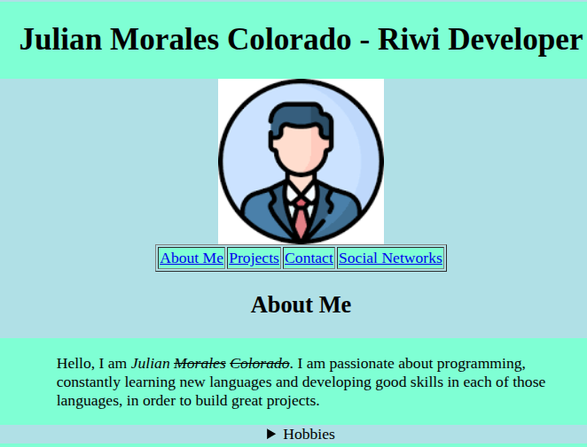
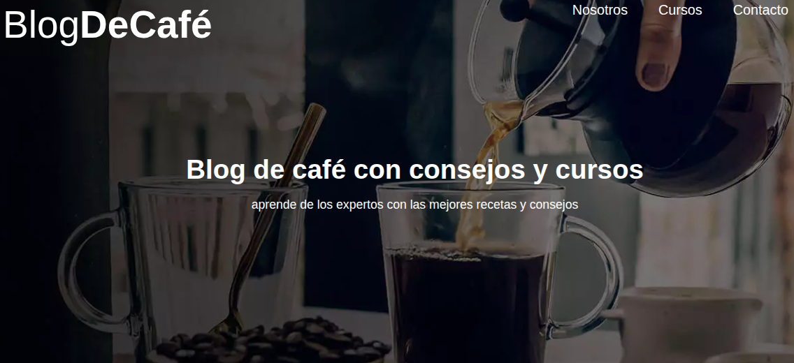
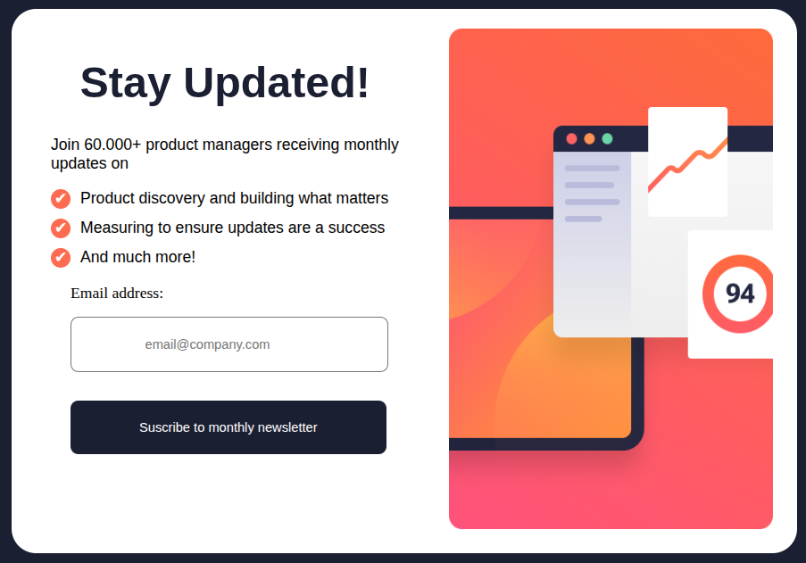

Julian Morales Colorado
Riwi developer
Projects
First project with HTML and CSS
The first project I started exploring the web world with. In this case, I would use information from my personal portfolio and translate it into a website, using the limited knowledge I had of HTML and CSS.
 View projectReplicated page
A challenge that involved replicating a coffee website. In addition to making it as similar as possible, it had to be compatible with multiple devices, i.e., responsive. The final details are still being finalized.
 View projectForm exercise
This challenge consists of replicating a format proposed by an American website. This project also had to be responsive and as close as possible to the shared image. This project explored some of its features in more depth.
 View project